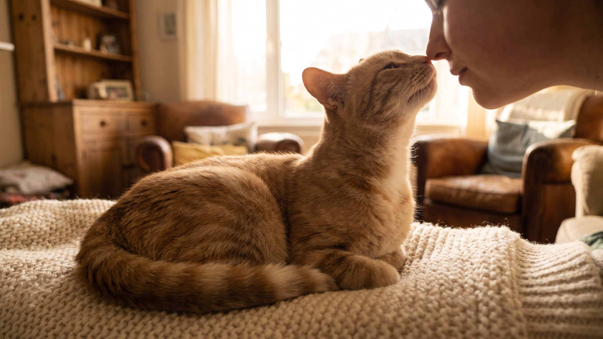

Кошка садится на грудь, тянется к лицу и методично обнюхивает рот и нос. Выглядит мило, но за этим стоит конкретная работа: кошка читает вас. Её нос в 14 раз чувствительнее человеческого, и за несколько секунд она получает больше информации, чем вы за утренний разговор. Ниже разбираем, что именно она там ищет и что это говорит о вашей паре.
🐾 Хотите понять, что кошка говорит вам?
Опишите ситуацию или пришлите видео в AnimaLife — AI разберёт поведение вашего питомца и подскажет, что делать. Бесплатно, ответ за минуту.
Разобрать поведение → Разобрать в MAX →
У вас iPhone? AnimaLife есть в App Store
Кошки воспринимают мир через запах так же, как мы через речь. У человека около 5 миллионов обонятельных рецепторов, у кошки, по разным оценкам, от 45 до 80 миллионов. Плюс специальный орган Якобсона в нёбе, который улавливает феромоны и химические сигналы, недоступные нашему носу.
Когда кошка тычется носом в ваш рот или нос, она читает. Читает запаховый профиль: кто этот человек, что происходит с его телом, где он был, что ел. Это первичная проверка.
У каждого человека запах уникален. Он складывается из сотен компонентов: кожные выделения, микробиом, питание, гормональный фон. Кошка запоминает этот «подпись-запах» хозяина и сверяется с ним при каждом контакте.
Утреннее обнюхивание у лица несёт сразу несколько слоёв информации:
Это не тревожное поведение. Кошка просто обновляет свою «базу данных» о вас.
У кошек есть ритуал, который называется обмен носами: два знакомых кота при встрече касаются носами и обнюхивают друг друга. Это приветствие. Это же кошка делает с хозяином, тычась носом в лицо.
Допустить кошку к своему лицу на расстояние в несколько сантиметров она может только с тем, кому полностью доверяет. В природе так не подпускают хищника. Когда кошка сама инициирует такой контакт, она включает вас в свою группу, считает частью своего круга.
Часть кошек идёт дальше: они как бы «метят» хозяина, потираясь щекой о лицо после обнюхивания. Один цикл: сначала считать информацию, потом оставить свою метку. Запаховый бондинг работает в обе стороны.
Само по себе обнюхивание лица, это норма поведения, а не повод для беспокойства. Присмотреться стоит, если изменился сам рисунок поведения.
На что смотреть:
Ничего из этого не требует срочных действий. Если поведение не проходит и выглядит нетипично для вашей кошки, просто расскажите об этом ветеринару на очередном осмотре.
🐾 У вашей кошки так же?
Расскажите в AnimaLife, как ведёт себя ваш питомец, — приложение объяснит причину и даст пошаговый план. Бесплатно, без записи к специалисту.
Разобрать свой случай → Разобрать в MAX →
У вас iPhone? AnimaLife есть в App Store
🐾 Понравился разбор?
Подпишитесь на канал — каждый день разбираем по одному тревожному симптому у кошек и собак: что в пределах нормы, а когда пора к врачу. Подпишитесь, чтобы не пропустить разбор, который может спасти здоровье вашего питомца.
Материал носит информационный характер и не заменяет очную консультацию ветеринара.